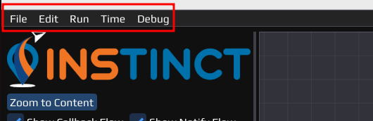
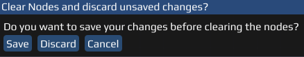
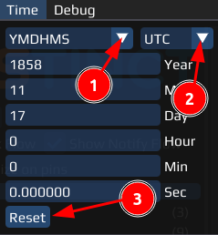

This page describes the Main Menu Bar that is in charge of file handling, style and format editing, initialization and running of files and additional features.
It consists of 
File
The File dropdown menu offers to save, open and create Flow-Files (flow-File format).
- New Flow: Creates a new Flow-File. By default, one is already open when the workspace is empty.
- Open Flow: Open a Flow from the file explorer.
- Open Recent: Gives a selection of recently opened files to open.
- Save: Saves the current Flow. If no file exists yet, file explorer will be opened.
- Save As..: Opens the file explorer to customize before saving the Flow.
- Quit: Closes INSTINCT.
- Note
- If a new Flow is created or opened, or the program quitted/closed but the workspace contains any changes, INSTINCT will ask how to proceed.

Edit
The Edit dropdown menu offers assisting tools in creating Flows and additional settings regarding styles and appearance.
- Undo: Resets last made change.
- Redo: Inverts Undo.
- Cut: Removes selected object(s) and copies them into clipboard.
- Copy: Copies selected object(s) into clipboard.
- Paste: Inserts from clipboard.
- Node Editor Style : Opens a window for advanced editing of the Nodes, e.g. Node, Pin, Flow representation.
- ImPlot Style : Opens a window for advanced style editing of the Plot Node Node, e.g. line style and color.
- Font Size Editor : Opens a window to select lager fonts:
- Use big default font: Increases font size of the INSTINCT main window.
- Use big window font: Increases font size of opened windows (e.g. the Font Size Editor - window itself).
- Use big mono font: Increases font size of the Log Output.
- Colormap Editor : Opens a window for advanced adding of a colormap globally or to the Flow.
Run
The Run dropdown menu handles the initialization and running of the Nodes and the Flow in the workspace.
- Initialize all Nodes: Clears and initializes each Node with set settings, ignoring all connections and so not exchanging data between them.
- Reinitialize all Nodes: Clears and repeats the initialization of each Node.
- Deinitialize all Nodes: Stops the initialization, but does not clear the last generated data.
- Run Flow: Runs the build Flow; automatically (re)initializes all Nodes and exchanges the data via connected Pins.
While a Flow is running the additional options are available:
- Stop execution: Stops the Flow while in execution, e.g. when the Flow loops infinitely.
- Note
- Changing settings in a Node can result in its deinitialization. In some cases, e.g. the Plot Node, stored data from a Flow can be immediately displayed when adding a plot.
Time
The Time dropdown menu offers a selection of Time systems and their representation. 
- Select time representation:
- YMDHMS: Year-Month-Day-Hour-Minute-Second
- GPS Week/ToW: GPS cycle, week and ToW
- Select time system
- UTC: Universal Time Coordinated
- GPST: GPS Time
- GLNT: GLONASS Time
- GST: Galileo System Time
- BDT: BeiDou Time
- QZNSST: QZNSS Time
- IRNSST: IRNSS Time
- Resets the time.
Debug
The Debug dropdown menu provides demo windows. Recommended for programmers, not relevant for basic users.
Last updated: 2024-01-31